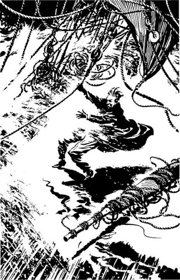

第五章: 海难 The Shipwreck
1 / 3
In the passengers' sitting room on the For farshire Mrs Dawson looked unhappily at Daniel, Mr Robb, and two other men -- Thomas Buchanan and James Kelly. Her two children were crying in her arms. "I'm so frightened. Do you think we're going to die? What can we do, Mr Donovan, without the engines?"
查看中文翻译
"Not much, Mrs Dawson," said Daniel slowly. "But there are some islands, south of here, called the Farne Islands. They are very near. I've seen the lighthouse flashing on them. I think the captain is trying to go into the quieter water between the islands and the mainland. I… I'll go outside again, to see how near the lighthouse is. I'll come back and tell you."
查看中文翻译
Daniel got up and went out into the night. It was raining hard now, and the wind was screaming from the back of the ship. He stared into the dark. He could see nothing in the west. Where was the light? He walked carefully across the ship, to the other side. Suddenly he fell on the wet deck, and he caught the side of the ship with his hands. Then he looked up, and a light flashed into his eyes. There it was -- the lighthouse, only three hundred metres away, to the north!
查看中文翻译
第五章: 海难 The Shipwreck
2 / 3
He stood up and began to run along the deck. But there in front of him, a great mountain of white water flew into the sky… ten… twenty metres above the ship.
查看中文翻译
"Rocks!" screamed Daniel. "Rocks! There are rocks in front of us, rocks all around! Captain! CAPTAIN!"
查看中文翻译
"But this is wrong!" he thought. "We're too close! Much too close! I must tell the captain!"
查看中文翻译
Then another very big wave hit the ship. White water flew everywhere, and fell on Daniel like stones. He heard a terrible crash, and more water fell on him. He opened his eyes, and looked back along the ship.
查看中文翻译
The captain was already shouting at the sailors, and the ship was turning, turning to the west, away from the light. But it was too late. There was a great crash, and Daniel and all the sailors fell to the deck. Then another crash… and another. The waves lifted the For farshire and threw it onto the rock, like a child playing with a toy.
查看中文翻译

Daniel held onto a rope, and stared into the dark. The light flashed again from the lighthouse. Then he looked back along the ship. People were running out onto the deck, and screaming.
查看中文翻译
第五章: 海难 The Shipwreck
3 / 3
Daniel went carefully back along the deck to the broken door. He put out his hand to touch it, and then a wall of white water hit the ship, and he could see nothing.
查看中文翻译
But there was nothing there.
查看中文翻译
A voice shouted into the wind. "God help us! Save us from the sea, oh God!" The door of the passengers' room was broken. But there were still some people inside the room -- Mr Robb, Mrs Dawson and her two children, Mr Buchanan, and James Kelly. Mr Robb was praying loudly.
查看中文翻译
Nothing but black water, and more waves. The ship was broken in two, and the back of the ship, with the captain and all the rich passengers, was not there.
查看中文翻译